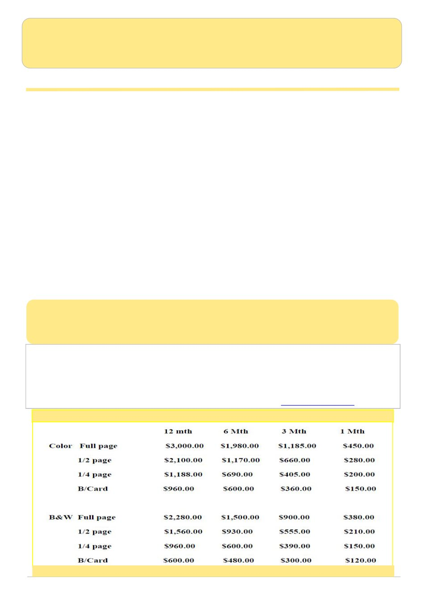

June 2026
3
AUSTRALIAN BEE JOURNAL
Published since 1918 by the VAA - founded in 1892 -
Registration No. A8347
JUNE 2026 - Volume 107 - No 6
Deadline for copy for the July 2026 journal is
10pm on Wednesday 1st of July 2026.
The Australian Bee Journal seeks to publish contributions dealing with all aspects of beekeeping.
Statements expressed by contributors do not necessarily reflect the views of the VAA Inc or the editor.
Editor: Annette Engstrom
Contact the Editor for ads, photos, classifieds and article information
The Editor, Australian Bee Journal, P.O. Box 42 Newstead, VIC. 3462 Email: abjeditors@yahoo.com
Australian Bee Journal Advertising rates
2-page ad - $4800.00 - available for 12 month contract only
World Bee Day Child Care Centre Presentation
Book: A Guide to the Safe Removal of Honey Bee Colonies from Buildings 10
Varroa Pyrethroid Resistance In Victoria
Bendigo Branch: Make & Mend Day
Classifieds / Members / Index of Advertisers
Cover photo: Jamie Trimby
Pincushion Hakea Hakea laurina